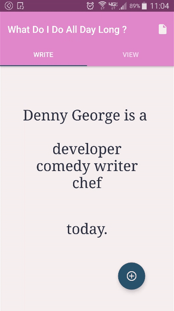

android developer, ux designer, educator, humorist
I like watching people shape technology and technology shape them.

What Do I Do All Day Long?
What do I day all day long is a prompt for you to fill at the end of each day. This is a novel way of tracking how you spent your day. It will hopefully help you make adjustments to dedicate your precious and limited time in a day to things that matter.
Technical Details
A SQLite Database stores your 3 major activities of the day and visualizes them as a visiting card for that day. The Create Card Page and the Timeline Page acts as two sibling pages of a Tab Layout
Code

Alone With My Phone
Alone with my Phone is a first person audio story that you participate in using your smartphone. The companion app reveals characters and their voices to you as you physically move from one place to the other. It is a story about the character's reliance on technology to initiate contact with humans and the disappointments that come with it.
Technical Details
A background service keeps checking your location and sends a notification when you reach near your destination. Using the orientation class the user is able to perform certain gestures with the phone to trigger the character's voice.

Live Feed
What is the point of going out and not tweeting about it? What is the point of going out and being on your smartphone all the time? Tough Problems need inventive problem solving. If only there was some technology to tweet for you as you talked to your friends over lunch.
Technical Details
A Bluetooth Low Energy board RFDuino helps detect food bites and sends that information to an android app which tweets on your behalf.
Loud Stream
Using a Men's public restrooms can be an awkward experience. There are no explicit etiquette other than the fact that we pretend that the other person does not exist and try to do our business as silently as possible. I made this app to assure the person standing next to me that we are together in this awkward journey. You set a timer as you enter the washroom and as you stand next to someone in the urinal, the phone that is in your pocket plays back a loud sound file to diffuse the tension.
Technical Details
I used the Alarm Class to act as the timer and the Android Media Player class plays back the mp3 file.